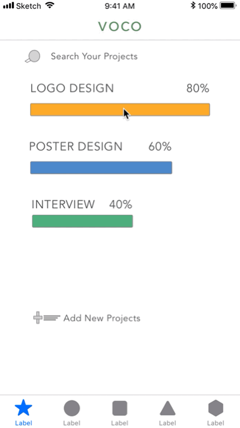
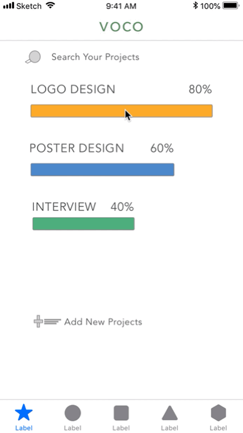

Summary
VOCO is a digital application aiming to improve decision making process for small student teams.
Its goal is to include all member’s opinions in the decision, allowing everyone to speank and ideas being heard.
Working in a student group is not easy.
Different personalities and diverse work norms may lead to the storm in team work.
Extroverts and introverts convey their ideas in a different way. Sometimes it is possible that introvers can be hidden in the meeting. That’s why Amazon’s meeting always start with 6 minutes silence to empower the strenghts of introverts.
Meanwhile, coming from diverse backgrounds, we all different norms of working.
While some people tend to use slack, others might stick to whatapp. When some people enjoy meeting in person, some prefer meeting in virtual space. In this case, we need to communicate with each other about their preference and make decision between options.
So, how can we make this transition an effective and inclusive process for everyone?
Talking to people to find right problems to solve.
After I did these primary research, I want to narrow down to a perspective I want to focus on.
So, I did some small interviews to understand others’ opinions and experiences on this subject.
To summarize, there are three ideas generated from the interviews.
First, a shared goal and a strong leadership improves group productivity;
Secondly, the role and the relationship in a group relies on group communication;
Thirdly, separated discussion is not efficient for group update and decision.
My first protorype and Learning from Mistakes
The first prototype I made is generally the integration of google drive, trello and whatsapp, as a solution to tackle the three problems above respectively.
It can manage your group process, store all your files and start a conversation with your co-workers.
However, later on when I work on all the features, I find it difficult to have a easy and simple workflow.
Since I put many features together, it needs more steps to achieve users’ goal, and thus it somehow put more stress on the group working process.
But the major reason tells me to reconsider the feature is that I think that integration of all the features is not the solution for my target users
 

Starting Again from Target Users
The characteristics of student teams explain why my first prototype wouldn’t work.
First of all, student team do not have a designated leader.
We take on task and work by interest and strengths.
Unlike professional workforce, a student team do not have program manager or a boss who assign group work and push the process.
Also, we tend to maintain a harmonious peer relationship while working with classmates.
We spend time waiting for response or achieving on an agreement to make sure everyone is happy.
Furthermore, we interpret cummunication cues and signals differently as we coming from dissimilar background.
Thus, soemtimes we might have misunderstanding towards others. Also, to avoid confivts, we may hide out true opinions and ideas.
As a result, we waste time on waiting and deciding and not spending enough time on communicating and working.
Decisions help a Team Moving Forward
Now my focus is narrowing down on helping team achieving agreements.
Just like in the fiction, each time characters makes choices develop the plot, we make decision to move forward the group process and thus boost teamwork productivity.
Therefore, this brings out the goal of VOCO.
It aims to assist the team to make decisions and achieve agreement. Accordingly, everyone can engage in the decision making process. And most importantly, the ultimate goal is to sharing opinions and achieve understanding.
Takeaway
For this product, it is essentially designing for human-human interaction. Dan saffer said it is improtant to ”facilitate communication between human through products”. It means that we still needs to think about how the cause of communication and how we do it.
We are designing for everyone, so be inclusive and engaging. Think about how introverted and marginalized people voice their ideas in the workforce.